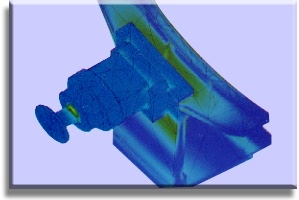
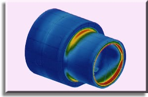

When tooling is used in high-stress situations, or supporting expensive hardware; you can be confident that it will be up to the task.
Engineering

When tooling is used in high-stress situations, or supporting expensive hardware; you can be confident that it will be up to the task.

With our state-of-the-art software, we can run finite element analysis on design models to assure structural integrity.
Mechanical engineers are available to run "Pro Mechanica" for analysis needs. Design seats are listed on the equipment page: Unigraphics versions 9 through "NX", Autocad version 2000, and Pro/MECHANICA 2000i.